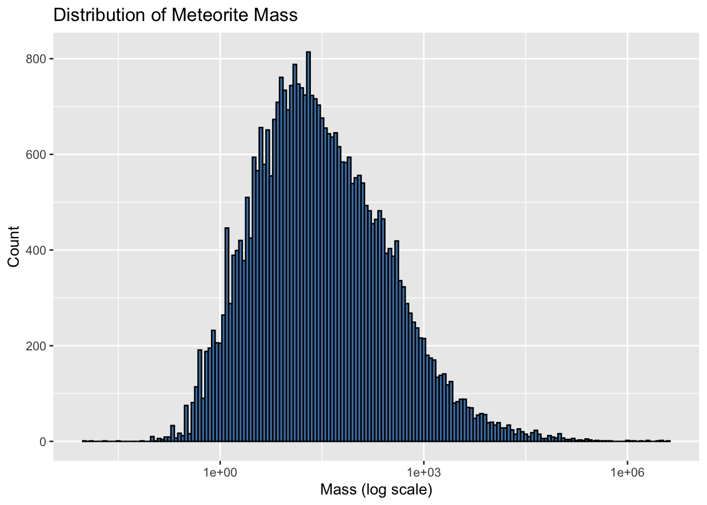
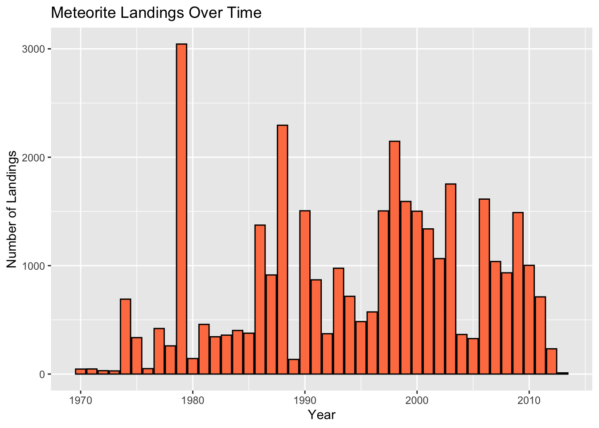

The dataset used in this project was sourced from Kaggle, where it was provided as a CSV file. You can explore or download the dataset directly from Kaggle by visiting this link.
As part of the data cleaning, we standardized the column names by
converting them all to lowercase for consistency and ease of use in
future analysis. We then filtered the dataset to include only records
from the years 1970 to 2013, ensuring that the analysis focused on a
more relevant and manageable timeframe. Next, we identified and removed
the “fall” column since all its entries contained the same value. Rows
with missing latitude or longitude values were also excluded to maintain
the accuracy and reliability of geographic data. Additionally, we
enriched the dataset by creating a new “continent” column. This was
achieved by classifying each record based on its
geo_location attribute, which allows for more detailed
geographic insights in the analysis.
meteorite_data <- read.csv("data/meteorite-landings.csv")
meteorite_data <- meteorite_data %>%
clean_names() %>%
filter(year >= 1970 & year <= 2013) %>%
select(-fall)
meteorite_data_cleaned <- meteorite_data %>%
filter(!is.na(reclat) & !is.na(reclong)) %>%
filter(!is.na(mass) & !is.na(year)) %>%
filter(mass > 0)meteorite_sf <- st_as_sf(meteorite_data_cleaned, coords = c("reclong", "reclat"), crs = 4326, remove = FALSE)
continents <- ne_countries(scale = "medium", returnclass = "sf") %>%
group_by(continent) %>%
summarise()
meteorite_data_with_continents <- st_join(meteorite_sf, continents["continent"], join = st_intersects)
meteorite_data_with_continents <- meteorite_data_with_continents %>%
mutate(continent = replace_na(continent, "Ocean"))
head(meteorite_data_with_continents)## Simple feature collection with 6 features and 10 fields
## Geometry type: POINT
## Dimension: XY
## Bounding box: xmin: -99.9 ymin: 13.66033 xmax: 42.81667 ymax: 45.82133
## Geodetic CRS: WGS 84
## name id nametype recclass mass year reclat reclong
## 1 Acapulco 10 Valid Acapulcoite 1914 1976 16.88333 -99.90000
## 2 Aioun el Atrouss 423 Valid Diogenite-pm 1000 1974 16.39806 -9.57028
## 3 Akyumak 433 Valid Iron, IVA 50000 1981 39.91667 42.81667
## 4 Al Zarnkh 447 Valid LL5 700 2001 13.66033 28.96000
## 5 Alby sur Chéran 458 Valid Eucrite-mmict 252 2002 45.82133 6.01533
## 6 Almahata Sitta 48915 Valid Ureilite-an 3950 2008 20.74575 32.41275
## geo_location continent geometry
## 1 (16.883330, -99.900000) North America POINT (-99.9 16.88333)
## 2 (16.398060, -9.570280) Africa POINT (-9.57028 16.39806)
## 3 (39.916670, 42.816670) Asia POINT (42.81667 39.91667)
## 4 (13.660330, 28.960000) Africa POINT (28.96 13.66033)
## 5 (45.821330, 6.015330) Europe POINT (6.01533 45.82133)
## 6 (20.745750, 32.412750) Africa POINT (32.41275 20.74575)The dataset is a simple feature collection comprising 6 features and 10 fields. The fields include key attributes such as the name, id, mass, year, latitude, and longitude of meteorite landings, along with a derived continent column.
summary(meteorite_data_cleaned)## name id nametype recclass
## Length:35882 Min. : 4 Length:35882 Length:35882
## Class :character 1st Qu.:10995 Class :character Class :character
## Mode :character Median :22200 Mode :character Mode :character
## Mean :25973
## 3rd Qu.:40586
## Max. :57458
## mass year reclat reclong
## Min. : 0 Min. :1970 Min. :-87.37 Min. :-165.43
## 1st Qu.: 6 1st Qu.:1987 1st Qu.:-76.72 1st Qu.: 0.00
## Median : 25 Median :1997 Median :-71.50 Median : 53.95
## Mean : 1484 Mean :1995 Mean :-43.65 Mean : 66.13
## 3rd Qu.: 133 3rd Qu.:2003 3rd Qu.: 0.00 3rd Qu.: 157.22
## Max. :4000000 Max. :2013 Max. : 81.17 Max. : 178.20
## geo_location
## Length:35882
## Class :character
## Mode :character
##
##
## The dataset contains 35,882 entries. The mass variable ranges from 0 to 4,000,000 grams, with a mean of 1,484 grams and a median of 25 grams, indicating significant skewness. The year variable spans from 1970 to 2013, with a median year of 1997. Latitude and longitude values reflect global coverage, while geographic and meteorite classification details enrich the dataset.
meteorite_data_cleaned %>%
ggplot(aes(x = mass)) +
geom_histogram(binwidth = 0.05, fill = "steelblue", color = "black") +
scale_x_log10() +
labs(
title = "Distribution of Meteorite Mass",
x = "Mass (log scale)",
y = "Count"
)
The mass distribution is heavily skewed due to the presence of extremely large meteorites. To normalize this skew, the log transformation of the mass was applied, resulting in a distribution resembling a normal distribution. This transformation facilitates better visualization and analysis.
meteorite_data_cleaned %>%
ggplot(aes(x = year)) +
geom_bar(fill = "coral", color = "black") +
labs(
title = "Meteorite Landings Over Time",
x = "Year",
y = "Number of Landings"
)
Meteorite landings were distributed unevenly across the years, with a noticeable increase in records toward the later part of the timeframe. This could be attributed to improved detection and recording technologies. A time-series plot provides insights into the frequency trends over the years.
name: The name of the meteorite landing.
id: A unique identifier for each meteorite.
nametype: The classification of the name type (e.g.,
“Valid”).
recclass: The classification of the meteorite based on
its composition.
mass: The mass of the meteorite in grams.
year: The year the meteorite landed or was
discovered.
reclat: The latitude coordinate of the meteorite landing
site.
reclong: The longitude coordinate of the meteorite
landing site.
geo_location: A formatted string combining the latitude
and longitude of the meteorite landing.
continent: The continent where the meteorite landed,
derived from the latitude and longitude.